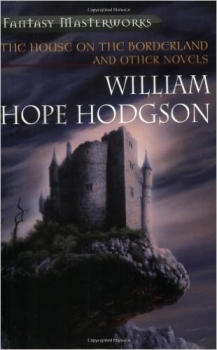
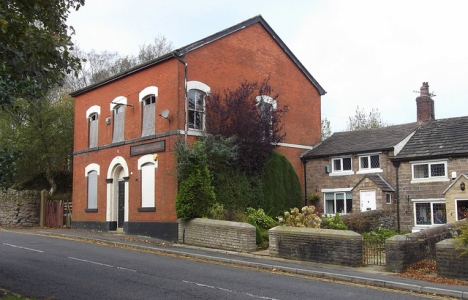

By Steve Sneyd
Back in 1988/9, having read — I now forget where — not only that William Hope Hodgson had lived for some time in Blackburn, Lancashire, but, of particular interest, that his idea for the mysterious dwelling of 'The House on the Borderland' may well have been influenced by his Blackburn home, I made attempts to find out where that home had been.
The Borough of Blackburn Community & Leisure Services Department had "nothing on file for Hope Hodgson" and did "not have the book" — their Lyndsey MacDonald, indeed, suggested that I might have the wrong Blackburn, there being at least four others.
But J B Darbyshire FLA, District Librarian of Lancashire County Council's District Central Library, and subsequently a Mr Sutton of the same library, proved to have the answers in terms of not one, but two, exact addresses, between them covering Hodgson's five years in Blackburn.
I had good intentions to pay a pilgrimage as soon as possible. Events supervened, time did what time does, and years went by.
Then I saw mention of a Fantasy Art 2001 AD exhibition at Blackburn Art Gallery, and was reminded of the Hodgson house matter. Amazingly, I outwitted my filing system, and found the data from the late '80s. On the very last day of the exhibition, it was off to Blackburn.
It seemed appropriate that the art display included a Jim Burns illustration of "The House On The Borderland (Hodgson)", presented as a striking medieval castle, little akin to the book's description, though correctly positioned on a tongue of rock above a chasm. The caption made no mention of Hodgson's Blackburn connection, however — an odd omission.
After the exhibition, now to find those Hodgson addresses.
I looked at the letter again: "Further to our telephone conversation regarding the Blackburn residence of William Hope Hodgson, I write to inform you that he was never a householder and, as he was only 20 when he opened his gymnasium, it is difficult to trace him from electoral registers.
"In 1903 he was lodging with Mrs. Elizabeth Sarah Hodgson, presumably a relative, at No. 2 Park Mount, Revidge Road. Assuming that he stayed with her for all his period of residence in the town, then his address would be 16 Henry Street, Blackburn, from 1899 to 1901 and 2 Park Mount from 1902 to 1904. Mrs Hodgson stayed on at the house which she owned and which was renumbered 307 Revidge Road in 1907. She had left the area by 1908."
The helpful woman in the Tourist Information Office didn't enquire why I wanted to know where these addresses were — they clearly rang no bell for her. Henry Street, she explained, had long since been demolished in slum clearance. However, Revidge Road was still there, and she photocopied me a street map. It was, according to the map, a VERY long road, a bit north of the town centre.
She suggested a bus that would take me to one end of the road but the day was pleasant, and the street map showed a large park running from Preston New Road, which began in the centre, right up to Revidge Road.
Up proved to be the operative word. The Corporation Park, entered by an imposing arch in the style of a decorative city gate of the Roman Empire, "Erected 1854-5 in the Mayoralty of Thomas Dugdale" (another notice explained that the whole park was officially opened in 1857 by William Pilkington, Mayor) began fairly narrow, but fanned out to a considerable width. Its paths also proliferated — but all of them shared the characteristic of climbing, continuously and steeply, the only level area of the whole park being that occupied by two ornamental lakes.
My selection of paths was random as I climbed. At last, having slanted up to the left above a pair of tennis courts, I reached the top of some steep steps to the right off a wider track, and found myself finally at the summit. In front of me a road, which had to be Revidge Road according to the map; and, across the road, houses. More precisely, immediately facing me was the end house of a short terrace of small two-story stone cottages, obviously old.
I crossed the road to look at the numbers, to find out where on Revidge Road I had come out.
And was left feeling very surprised and a little shivery. I had left the Park by the one path, out of many I might have picked along its considerable length of Northern edge, which came out immediately opposite number 307 itself, Hodgson's old home.
The house's location is itself on what could be called a kind of borderland. It is on a ridge that in one direction, that from which I had come, overlooks the town, a view of buildings as far as can be seen. But in the other direction, because this is the end of the built-up area, the view is very different, out over a golf course and small grass-covered water tank, with beyond them nothing but empty moorland into the distance.
To the house's east, there is the gap of an unmade road onto the golf course, before an extremely long Victorian terrace begins. To the west of the group of three old houses to which it belongs, there is a large public house or inn, on the far side of which a high wall holds back higher shrubgrown ground, well behind which must lie the microwave transmission tower that had dominated the skyline when looking upwards from the town centre; at this point Revidge Road drops away steeply down towards the continuation of Preston New Road.
Like its two adjoining neighbours to the West, 303 and 305, 307 has a small garden to the front.The four front windows, two on each floor, are modern insertions.
I went along the track east of the house, oddly named Red Rake, to get a view of the building's side and back. A projection gives it an overall L shape; on this side there is one large window above, and two very small ones on the ground floor. The back can be reasonably well seen over the high wall of a smallish back garden: at the junction of the L is a square "stair tower", and the garden area ends to the West with another projecting extension, this time of 305, although a lower slate-roofed structure immediately behind 307 appears to be part of it, not its neighbour. Nowhere was there any blue plaque or other indication that a notable writer had once lived here.
I then walked past the front of the other two cottages, to the Corporation Park pub building which ends the group. Much larger and taller than its neighbours, built in red brick, and looking late 18th or early 19th century, this has an exterior nearer the necessary size for the book's house than the little cottage, but otherwise it in no way matched the description. Rather than "curious and fantastic to the last degree", it was just a solid plain bit of copybook Georgian, with no sign of "Little curved towers and pinnacles, with outlines suggestive of leaping flames". Moreover, far from having a "body" in "the form of a circle", it was a straighforwardly rectangular structure.
Ah well, time for a drink before I went.
So I went in. Now THIS was more like it. HERE were the "empty rooms and corridors" of the Borderland house, the bar area already full of dusky gloom although it was only midafternoon. The only other customer watched the TV to learn of Blackburn Rovers' half-time score; his dog persistently attacked, caught, and chewed beermats. A landlord dark of suit, his head totally shaved, prowled gloomily. The other customer left. The landlord wandered away into some Private realm behind the public scene.
And, for a few minutes, the place to myself, the chattering TV commentary mentally tuned out to gibberish, dwindled away to the calling of distant, horrid creatures, I was wholly convinced that this old, gloomy, high-ceilinged interior was indeed where an inspired Hodgson had found the setting for his masterpiece of cross-temporal terror. And those few minutes made the whole Blackburn "pilgrimage" worthwhile.
A Google Streetview image of Revidge Road near the Corporation Park Pub. Mr. Hodgson's former residence is in the row of houses further along the street.
© by Steve Sneyd.
Pub image © 2011 by Robert Wade and used under a Creative Commons license.
The book cover art was created by Jim Burns for the Gollancz Fantasy Masterworks series.